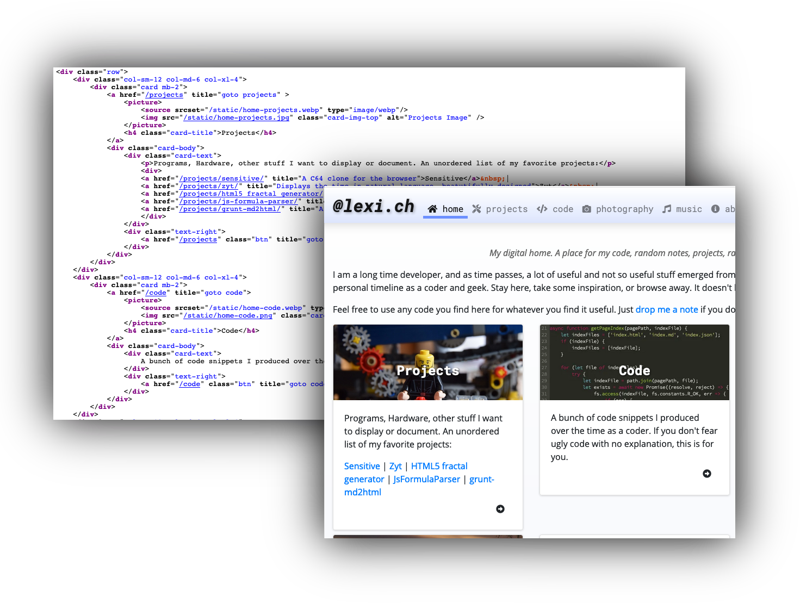
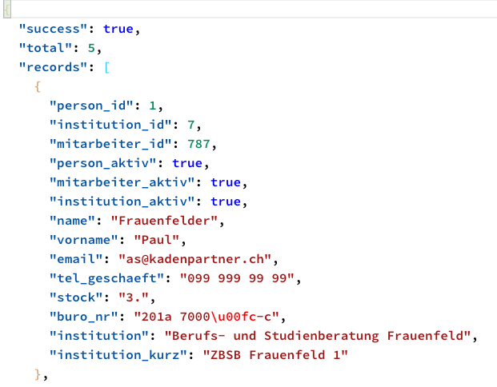

{% extends "../_base_template.html" %}
{% block title %}Lektion 4 - Web-MVC-Architektur{% endblock %}

{% block sections %}
<section data-markdown>
<textarea data-template>
<i class="fas fa-graduation-cap"></i> M151 - DB in Web-App einbinden
=============================

Heutiges Ziel
--------------

* Sie haben die Grundstruktur MVC verstanden
* Sie können die Grundstruktur für Ihr MVC-Web-Framework in Code umsetzen:
  * Request, Dispatching/Routing, Controller/Action-Methode, Response (HTML, Views)

</textarea>
</section>

<section data-markdown>
<textarea data-template>
<i class="fas fa-graduation-cap"></i> Response - Views
=============================

Wir erinnern uns: Das MVC-Design-Pattern teilt die Verantwortlichkeiten von Code in:

* **M**odel (Daten)
* **V**iew  (Ansicht)
* **C** (Logik)

<i class="far fa-hand-point-right"></i> Uns fehlt nun noch das **V**, also die Views.

Aus Sicht des Backends, also des PHP-Programms: Was ist dabei als "View" zu verstehen?
</textarea>
</section>

<section data-markdown>
<textarea data-template>
<i class="fas fa-graduation-cap"></i> Response - Views
=============================

Die **View** aus Server-Sicht ist das, was der Browser zur Anzeige / zur Ausgabe von Daten benötigt.
Dies kann somit sein:

* HTML-Ausgabe
* maschinenlesbare Daten (z.B. JSON)
* dynamisch generierte Bilder / Dokumente

<div style="display:flex;justify-content: space-around;align-items: center">
    
    
    
</div>

Diese Views werden also von unserem (PHP-)Backend "produziert": Die Web-Applikation ist dafür zuständig, diesen Inhalt (diese Views) zu generieren und auszuliefern.

<i class="far fa-hand-point-right"></i> Was ist mit statischen Dateien / Bildern? Müssen diese auch vom
PHP-Backend prozessiert werden? Wer liefert diese aus?
</textarea>
</section>

<section data-markdown>
<textarea data-template>
<i class="fas fa-graduation-cap"></i> Erzeugen von View-Output in einer Controller-Action-Methode
=============================

Wie reagiere ich im Controller auf Anfragen (Requests)?

Innerhalb der Action-Funktion ist man grundsätzlich frei:
Hier kann getan werden, was immer notwendig ist, und eine entsprechende
Ausgabe erzeugen. Ein Beispiel (DefaultController, Funktion index):

Hier wird aufgrund der Route der `DefaultController` mit der Funktion `index()` aufgerufen.
Diese Funktion erzeugt dynamisch generiertes HTML (die "View"):

```php
<?php
# DefaultController:
class DefaultController extends Controller {
    public function index() {
        // Content-Type für Output setzen, hier z.B. HTML:
        header('Content-Type: text/html');
        // Ausgabe erzeugen:
        echo "<h1>Hello, World!</h1>";

        echo "<p>Gelieferte Parameter:</p>";
        foreach($_REQUEST as $key=>$value) {
            echo "<p>Param: {$key} => {$value}</p>";
        }
    }
}
```
</textarea>
</section>

<section data-markdown>
<textarea data-template>
<i class="fas fa-graduation-cap"></i> Abstrahieren der View-Erzeugung
=============================

MVC separiert ja die Verantwortlichkeiten: Der Controller ist für die Logik zuständig, die View für die Darstellung.
Im oberen Beispiel hat nun aber auch der Controller die Ausgabe, also die View erzeugt. Wir wollen dies
weiter abstrahieren, um im Sinne von MVC die Logik von der View-Ereugung zu trennen.

Das Erzeugen von dynamischem HTML ist eine Aufgabe, die immer wieder vorkommt (eigentlich bei jedem
Request). Wir übergeben diese Aufgabe somit einer `View`-Klasse. Im Controller wollen wir nur noch
die notwendigen Daten (das **Model**) aufbereiten und der View übergeben:

```php
<?php
    # Klasse DefaultController, funktion „demo“:
    public function demo() {
        // Instanzieren einer neuen View, mit Angabe eines HTML-Templates:
        $view = new View('default-demo.html');

        // Übergeben der Daten (aka "Model") an die View:
        $view->assign('datum',strftime('%d.%m.%Y'));
        $view->assign('params',$_REQUEST);

        // View "rendern" (HTML erzeugen lassen):
        $view->render();
    }
```

* In der Action-Funktion wird die Klasse „View“ instanziert. Dabei wird ein HTML-Template (eine Vorlage mit Platzhaltern) angegeben.
* Der View-Klasse werden Daten, welche für die Ausgabe notwendig sind, zugewiesen (assign)
* Die Ausgabe wird mit „render()“ erzeugt.

**Eine sehr rudimentäre View-Klasse finden Sie auf Moodle**: Studieren Sie diese, damit Sie deren Funktion
kennen lernen / verstehen.

Das HTML-Template ist ein Stück HTML, welche die übergebenen Daten der View
in PHP-Schnippseln verarbeitet. Es wird dabei ebenfalls vom PHP-Interpreter abgearbeitet und hat Zugriff
auf die zugewiesenen Daten:

```php
# Datei 'default-demo.html':
<h1>Hello, World!</h1>
<p>aktuelles Datum: <?php echo $datum; ?></p>
<h2>Params:</h2>
<ul>
    <?php
    foreach($params as $key=>$value) { ?>
    <li>
        <?php echo $key.': '.$value; ?>
    </li>
    <?php } ?>
</ul>
```

<i class="far fa-hand-point-right"></i> Meine Empfehlung: Setzen Sie für die HTML-Templates eine so genannte
**„Template Engine“** ein: Für PHP gibt es diverse Lösungen wie z.B. [ **Smarty** ](https://www.smarty.net/), [ **Blade** ](https://github.com/jenssegers/blade)
oder [ **Twig** ](https://twig.symfony.com/).
Solche Engines können ebenfalls via **„composer“**-Paketmanager installiert werden und sind viel mächtiger als
die hier aufgezeigte Minimal-Lösung.
</textarea>
</section>

<section data-markdown>
<textarea data-template>
<i class="fas fa-graduation-cap"></i> Aufgabe: Abstrahieren der View-Erzeugung
=============================

Versuchen Sie, eine eigene View-Infrastruktur zu entwickeln: Entweder anhand der Vorgabe,
mittels einer Template-Engine, oder einem eigenen Entwurf.

Ziel ist, dass Ihre Controller von der View-Erzeugung "befreit" werden: Dies ist das Grundkonzept von MVC.

</textarea>
</section>
{% endblock %}
